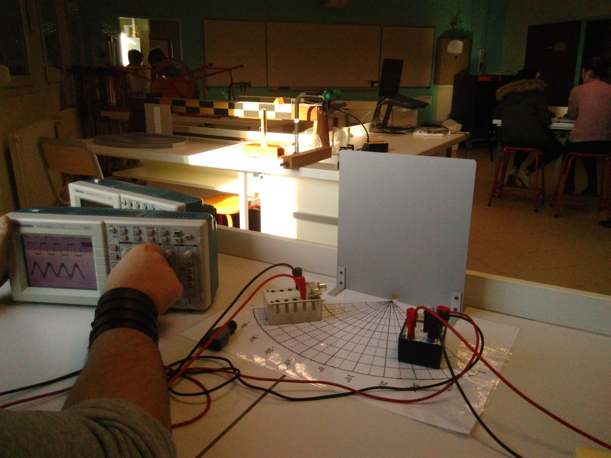
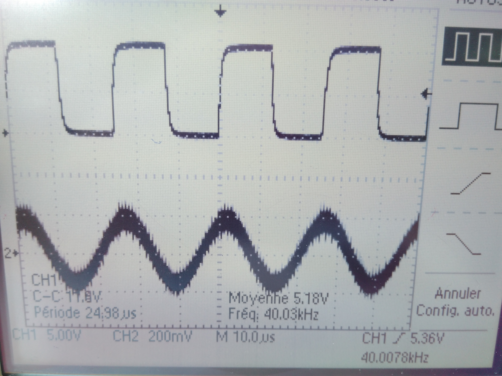
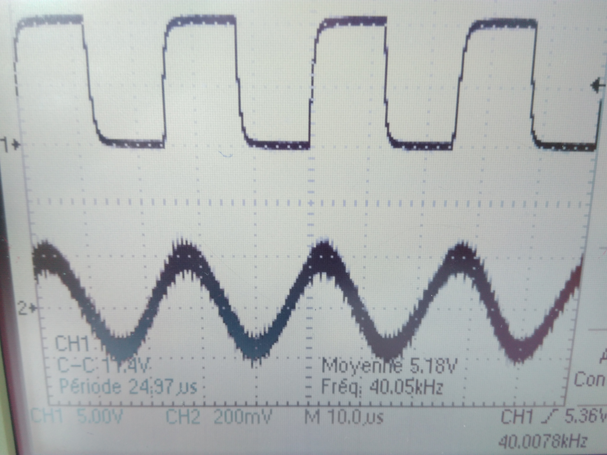
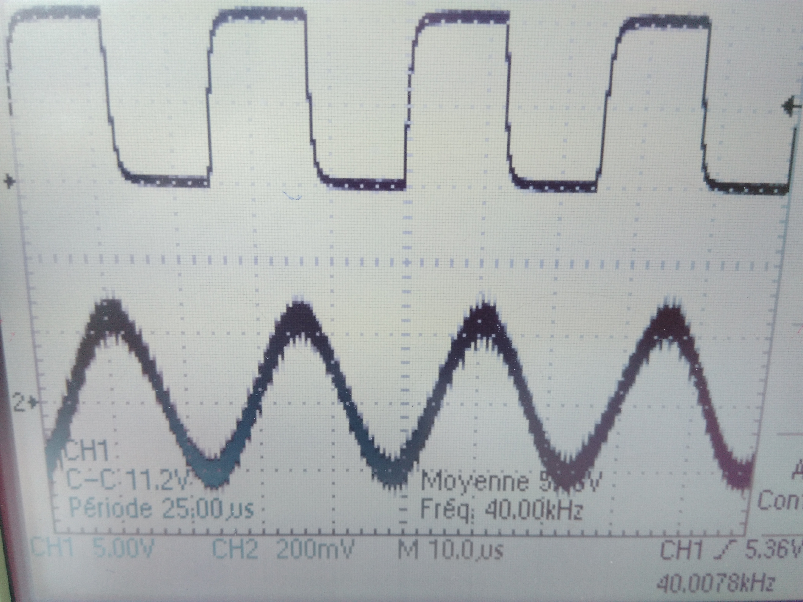
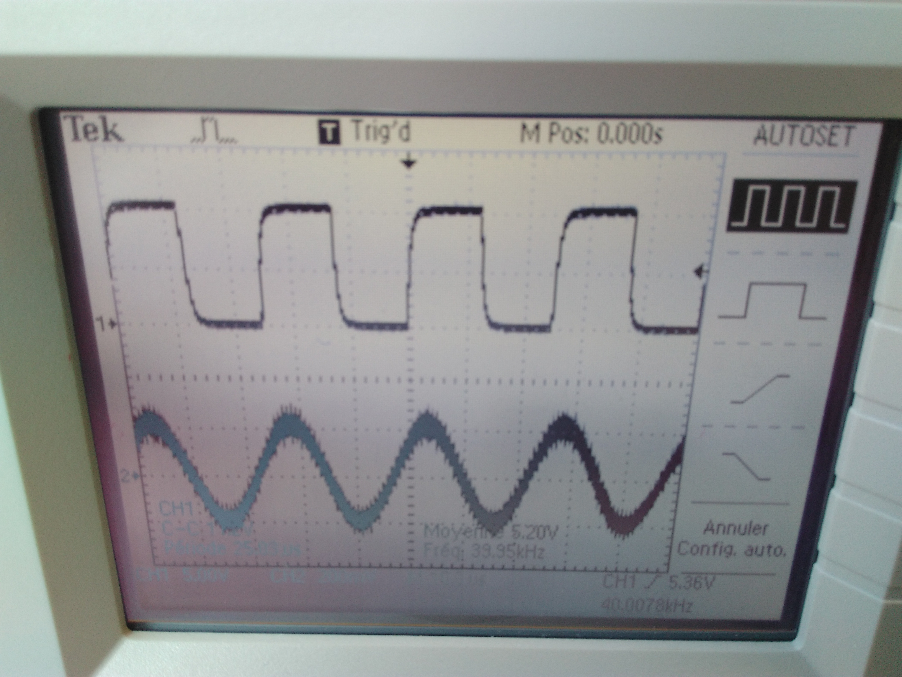
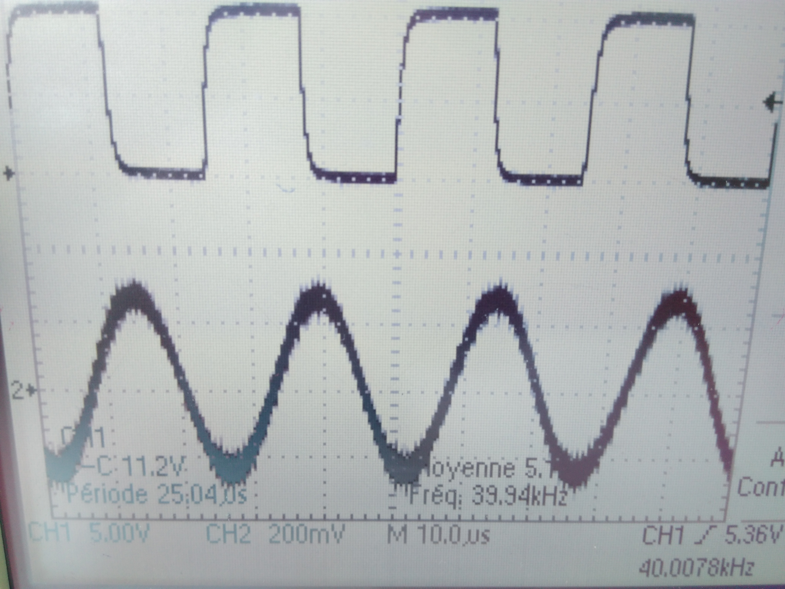

L'expérience
Notre première exprérience à été de mesurer la différence de perception entre différents types d'oreille, par exemple entre celle d'un chien et d'un humain. Pour faire ceci, nous
avons utilisé de la mousse expansive pour simuler la structure externe de l'oreille. Pour la structure interne on a utilisé un simple tuyau relié à un micro, Le micro étant
connecté à un ordinateur avec latis-pro. Nous avons réalisé deux oreilles: une humaine et une autre de chien. On a émis un son avec un diapason et nous avons relevé ce que le
micro a capté. Les résultats que nous avons obtenus ne sont pas valides car la mousse expansive qui compose les oreilles a absorbé certaines fréquences et a réduit l'intensité du
son.
Notre deuxième expérience a consisté à mesurer la réverbération du son de différents matériaux. On a utilisé du polystyrène, du métal, de la mousse absorbante et du carton.
Ci-dessous, une photo du montage réalisé (ici c'est le métal qui est testé). Nous avons mis cette expérience en lien avec la 3
e partie sur l'acoustique car elle prouve
que les matériaux ont différents taux d'absorption.

Les résultats que nous avons obtenus avec les différents matériaux sont listés dans le tableau suivant.
| Matériau |
Angle entre l'émetteur et le récepteur |
différence entre les curseurs (Δ) |
Fréquence de l'onde émise |
Volts / Div |
Différence entre tmax et tmin |
Fréquence entre les périodes |
nombre de périodes |
| Métal |
40° |
75.60 µs |
40 kHz |
20.0 V |
24.0 V |
13.23 kHz |
3 |
| Carton |
40° |
75.20 µs |
40 kHz |
20.0 V |
31.2 V |
13.30 kHz |
3 |
| Polystyrène |
40° |
76.00 µs |
40 kHz |
20.0 V |
22.4 V |
13.16 kHz |
3 |
| Mousse absorbante |
40° |
0 |
40 kHz |
20.0 V |
0 |
0 |
0 |
Comme on peut le voir, la mousse absorbante n'a renvoyé aucun ultrason, donc nous n'avons pas de courbe à traiter. Le carton, ou plus généralement le bois, sont les plus appropriés pour réverbérer le son.
Ensuite, nous avons regardé la puissance de l'onde captée par le récepteur en fonction de l'angle de celui ci. L'émetteur reste à la même place et on fait varier l'angle entre
celi-ci et le récepteur. Nous obtenons les courbes suivantes avec le polystyrène. La courbe du haut est celle de l'émetteur, la courbe du bas est celle du récepteur.

Ici, avec le récepeur à 0°, la courbe de celui-ci est minimale.

Ici, le Δ entre tmax et tmin a augmenté. Le récepteur est à 10°.

Ici, le Δ entre tmax et tmin a encore augmenté. Le récepteur est à 20°.

Ici, Δ est presque à son maximum. Le récepteur est à 30 °.

Ici, Δ est à son maximum. Le récepteur est à 40°.